Marble is a Virtual Globe and World Atlas. It is part of the KDE Software Compilation and distributed under the terms of the LGPL, Version 2. Please visit the official Marble website for further information.
Marble on Maemo
Find your way and explore the world with Marble.
Marble is a Virtual Globe with advanced routing capabilities. Use it as your personal navigation device to guide you to any destination in the world. Download maps from a variety of themes and explore the surroundings. Record your trip and share it with your friends.
 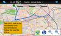
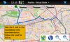
 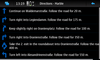
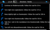
Guidance Mode
Have Marble announce turn points during your journey -- on the screen and by voice guidance.
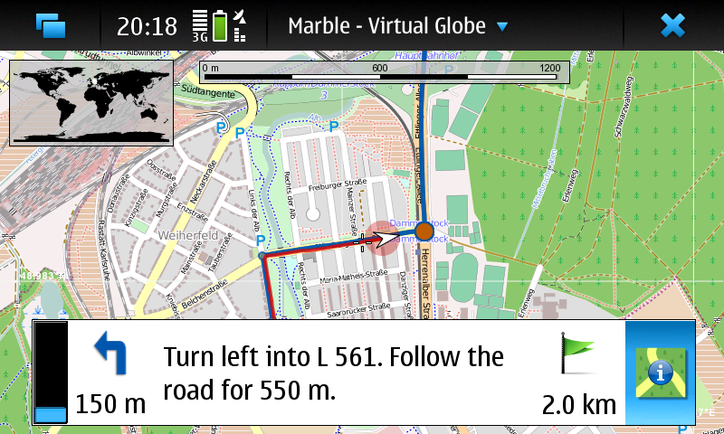 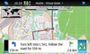 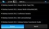
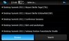
 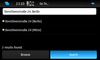
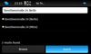
Offline POI Search
List all points of interest for a certain category (Marble 1.2). Turn on GPS to have the nearby ones appear on top.
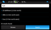 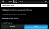
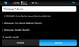
{kind=link}
{kind=link}
{kind=link}
{kind=link}
{kind=link}

Main features
- Online and offline routing
- GPS tracking and recording (KML format)
- Themable maps (OpenStreetMap, Satellite Map, many more)
- Support for different projections (globe, flat map, ...) and other planets
- Download of maps and route data for offline usage
External Links
- A set of tutorials that get you started
- The feedback thread in Maemo's discussion forum
- Our mailing list
- The #marble IRC channel on Freenode
News
| 2012-08-12 | The stable version Marble 1.4.0 is available in the extras-devel repository for testing and later promotion to extras-testing and extras. |
| 2011-06-15 | We have started the Voice of Marble contest. Your voice counts! |
| 2011-05-25 | The stable version Marble 1.1.1 is available in the extras repository. It fixes some minor bugs. |
| 2011-05-15 | The stable version Marble 1.1.0 is available in the extras repository. Learn about new features. |
| 2011-03-26 | The stable version Marble 1.0.1 is available in the extras repository. It fixes some minor bugs. |
| 2011-02-01 | The stable version Marble 1.0.0 has been released and can be installed directly from the Maemo extras repository. Compared to RC 2, some bugs have been fixed and (once again) the rendering speed has been improved.
The packages marble-maps (additional map themes) and monav-routing-daemon (offline routing backend) are in extras-testing and will be available in extras soon as well. |
Maintained by the Marble developers.